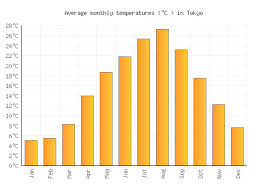

Väderinformation
Kallast temp idag: 13°C
Varmast temp idag: 37°C
Fuktighet: 5%
Starkaste vind: 2000 m/s (Alla riktningar)
Känns som 38°C
Vind 40 m/s (Stark vind)


Kallast temp idag: 13°C
Varmast temp idag: 37°C
Fuktighet: 5%
Starkaste vind: 2000 m/s (Alla riktningar)